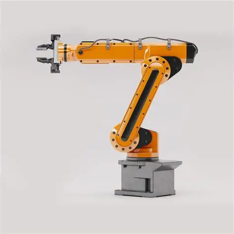

Conceito
O robô articulado, também chamado de antropomórfico, é composto por uma série de elos conectados por juntas rotativas, imitando a estrutura de um braço e ombro humanos. É a configuração mais versátil e amplamente utilizada na indústria, por oferecer grande liberdade de movimento em todas as direções.

Princípio de funcionamento
Cada junta do robô articulado é acionada por um motor independente (servomotor), permitindo rotações combinadas que posicionam o efetuador final em praticamente qualquer ponto e orientação dentro do seu envelope de trabalho. O controlador calcula a cinemática do braço para transformar coordenadas desejadas em ângulos de cada junta.
Principais características técnicas
| Graus de liberdade | Normalmente 6 (podendo chegar a 7) |
|---|---|
| Tipo de movimento | Rotativo em todas as juntas |
| Precisão | Alta |
| Velocidade | Alta |
| Capacidade de carga | Baixa a muito alta (de poucos kg a mais de 1 tonelada) |
| Área de trabalho | Formato esférico irregular, grande alcance |
Aplicações industriais
- Solda a ponto e solda MIG/TIG em linhas automotivas;
- Pintura industrial;
- Manuseio de materiais pesados;
- Paletização;
- Montagem complexa em múltiplas orientações.
Integração com automação e IoT
Robôs articulados de última geração possuem sensores em cada junta que monitoram torque, temperatura e vibração. Esses dados alimentam sistemas de manutenção preditiva baseados em nuvem, permitindo prever desgastes em redutores e motores antes de causarem paradas não planejadas, um dos pilares da manufatura inteligente.